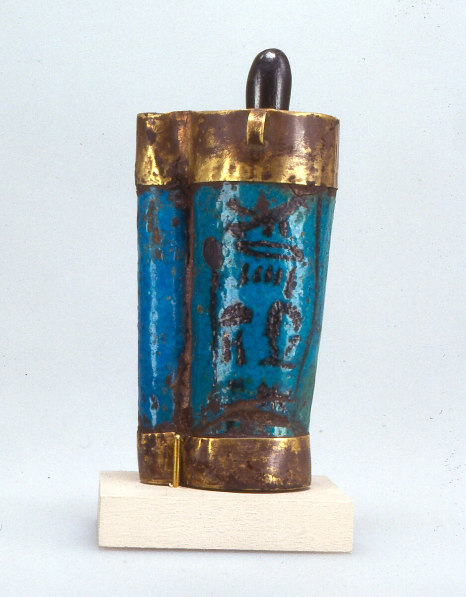
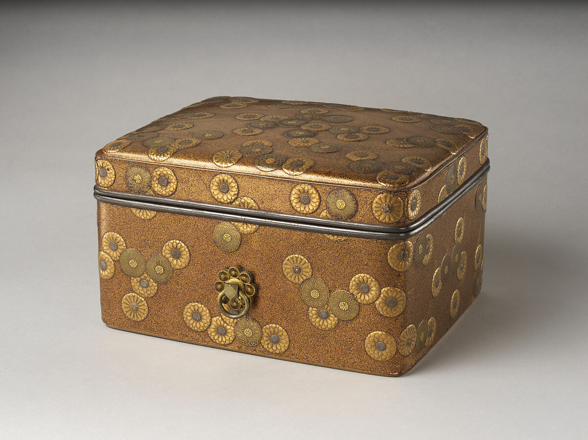

BEAUTY THROUGH OBJECTS
从眼妆管到梳妆台
一部从容器讲起的化妆品发展史。
把几件不同时代的化妆品放在同一张桌上，你可能先猜错它们的用途。古埃及的眼妆管只有拇指高，十五世纪日本的妆奁华丽得像一件珠宝。再往后，一瓶有颜色的化妆水、一支印着色号的口红，就越来越接近今天熟悉的样子。每件物品都留下一道线索，关于谁在使用化妆品，又是怎么使用的。
一支眼妆棒，两份工作
古埃及人打开这支小蓝管，抽出来的是一根赤铁矿棒。插回去，它是瓶塞。抽出来，它就用来涂抹管里的粉状眼妆。现代眼妆常见的「把涂抹工具和容器做在一起」，在这件小物上已经能看到类似的巧思。当时男女都会使用化妆品，这只精致的蓝釉金边眼妆管还刻着拥有者的名字。

当梳妆盒成为礼物
十五世纪上半叶的日本，一只蒔绘漆妆盒里原本会放小盒和梳子。它的外面铺着金银菊纹，连里面的衬里也用菊纹呼应。博物馆把这类珍贵妆奁放在当时的供奉习俗中解释。贵族会将镜子、梳妆盒等献给神明，妆饰也成了宫廷礼仪的一部分。隔着这么多世纪看它，最容易认出的仍是那种熟悉的心思：认真收好每天要用的小东西。

药房柜台上的一瓶「红水」
1897 年，原本经营药房的资生堂推出化妆水 Eudermine。玻璃瓶里是酒红色液体，人们给它起了个直白的昵称「资生堂红水」。这个例子很适合用来理解现代化妆品的一种变化：产品有了自己的名字、可识别的包装和配方开发的故事。资生堂后来多次更新了配方和瓶身，系列名却留了下来。资生堂公司史 ↗
口红有了名字，也有了色号
史密森学会收藏的一支约 1940 年代的 Max Factor 口红，用的是金色金属管。管盖刻着好莱坞字样，底部贴纸则写着 Coral Glow。一个名字留给品牌，一个名字留给颜色。今天试口红时，问同系列有没有更浅一点的颜色，这套听起来再平常不过的选择方式，已经留在当年那张小贴纸上。史密森学会藏品记录 ↗
下次拿起一瓶化妆品，不妨先翻到背面，再看一眼它的盖子。成分表告诉你里面装了什么，瓶口、涂抹棒和色号告诉你它怎么被使用。化妆品的历史，就藏在这些随手碰到的细节里。